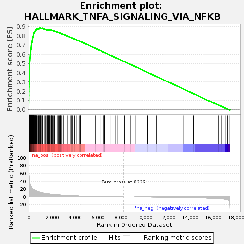
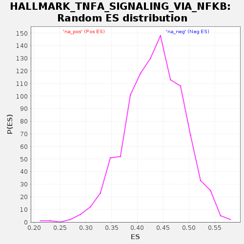

| | | Dataset | hpm3.norm.res.A.C.stat |
| Phenotype | NoPhenotypeAvailable |
| Upregulated in class | na_pos |
| GeneSet | HALLMARK_TNFA_SIGNALING_VIA_NFKB |
| Enrichment Score (ES) | 0.8846544 |
| Normalized Enrichment Score (NES) | 2.0431948 |
| Nominal p-value | 0.0 |
| FDR q-value | 0.0 |
| FWER p-Value | 0.0 |
Table: GSEA Results Summary

Fig 1: Enrichment plot: HALLMARK_TNFA_SIGNALING_VIA_NFKB
Profile of the Running ES Score & Positions of GeneSet Members on the Rank Ordered List
| SYMBOL | RANK IN GENE LIST | RANK METRIC SCORE | RUNNING ES | CORE ENRICHMENT | | 1 | PTGS2 | 0 | 108.161 | 0.0230 | Yes |
| 2 | IL6 | 1 | 94.347 | 0.0430 | Yes |
| 3 | TNFAIP3 | 2 | 84.861 | 0.0610 | Yes |
| 4 | IL1B | 3 | 81.485 | 0.0783 | Yes |
| 5 | PTX3 | 5 | 78.765 | 0.0950 | Yes |
| 6 | INHBA | 6 | 73.401 | 0.1106 | Yes |
| 7 | TNFAIP2 | 7 | 70.305 | 0.1255 | Yes |
| 8 | TNFAIP6 | 8 | 68.898 | 0.1402 | Yes |
| 9 | BMP2 | 9 | 68.150 | 0.1546 | Yes |
| 10 | BIRC3 | 11 | 66.460 | 0.1687 | Yes |
| 11 | ATF3 | 12 | 64.634 | 0.1824 | Yes |
| 12 | NAMPT | 13 | 63.745 | 0.1960 | Yes |
| 13 | LIF | 15 | 61.848 | 0.2091 | Yes |
| 14 | ICAM1 | 16 | 61.790 | 0.2222 | Yes |
| 15 | IL1A | 18 | 60.389 | 0.2349 | Yes |
| 16 | CXCL3 | 21 | 57.743 | 0.2471 | Yes |
| 17 | SERPINB2 | 24 | 56.719 | 0.2590 | Yes |
| 18 | NFKB1 | 25 | 55.994 | 0.2709 | Yes |
| 19 | PPP1R15A | 28 | 54.785 | 0.2824 | Yes |
| 20 | IER3 | 34 | 53.210 | 0.2934 | Yes |
| 21 | G0S2 | 35 | 52.500 | 0.3046 | Yes |
| 22 | MAFF | 37 | 51.182 | 0.3154 | Yes |
| 23 | SOD2 | 41 | 49.158 | 0.3257 | Yes |
| 24 | OLR1 | 44 | 48.372 | 0.3358 | Yes |
| 25 | MSC | 45 | 47.906 | 0.3460 | Yes |
| 26 | SLC2A3 | 48 | 46.201 | 0.3557 | Yes |
| 27 | PNRC1 | 50 | 45.839 | 0.3654 | Yes |
| 28 | PHLDA1 | 51 | 45.815 | 0.3751 | Yes |
| 29 | KLF6 | 53 | 44.557 | 0.3845 | Yes |
| 30 | FOSL1 | 55 | 44.180 | 0.3939 | Yes |
| 31 | VEGFA | 57 | 43.937 | 0.4031 | Yes |
| 32 | CCL2 | 59 | 43.579 | 0.4123 | Yes |
| 33 | TNIP1 | 60 | 43.268 | 0.4215 | Yes |
| 34 | ZC3H12A | 61 | 42.981 | 0.4306 | Yes |
| 35 | DRAM1 | 65 | 41.734 | 0.4393 | Yes |
| 36 | SQSTM1 | 66 | 41.602 | 0.4482 | Yes |
| 37 | CXCL1 | 67 | 41.278 | 0.4569 | Yes |
| 38 | TSC22D1 | 74 | 39.134 | 0.4649 | Yes |
| 39 | CXCL6 | 75 | 39.068 | 0.4732 | Yes |
| 40 | NFKB2 | 76 | 38.244 | 0.4813 | Yes |
| 41 | BHLHE40 | 78 | 37.837 | 0.4893 | Yes |
| 42 | PLPP3 | 81 | 37.034 | 0.4971 | Yes |
| 43 | SDC4 | 82 | 37.031 | 0.5049 | Yes |
| 44 | IRF1 | 83 | 36.898 | 0.5128 | Yes |
| 45 | AREG | 86 | 36.008 | 0.5203 | Yes |
| 46 | MCL1 | 89 | 35.734 | 0.5278 | Yes |
| 47 | RIPK2 | 93 | 34.286 | 0.5349 | Yes |
| 48 | B4GALT1 | 95 | 34.098 | 0.5421 | Yes |
| 49 | NFKBIA | 96 | 34.059 | 0.5493 | Yes |
| 50 | JUN | 100 | 33.377 | 0.5562 | Yes |
| 51 | NR4A1 | 104 | 33.192 | 0.5631 | Yes |
| 52 | CXCL2 | 105 | 33.079 | 0.5701 | Yes |
| 53 | DUSP1 | 119 | 31.981 | 0.5761 | Yes |
| 54 | FOSL2 | 123 | 31.228 | 0.5826 | Yes |
| 55 | RNF19B | 125 | 30.410 | 0.5890 | Yes |
| 56 | REL | 129 | 30.133 | 0.5952 | Yes |
| 57 | JUNB | 130 | 30.089 | 0.6016 | Yes |
| 58 | EGR1 | 139 | 29.550 | 0.6074 | Yes |
| 59 | GEM | 140 | 29.500 | 0.6137 | Yes |
| 60 | NR4A3 | 141 | 29.406 | 0.6199 | Yes |
| 61 | SPHK1 | 143 | 29.365 | 0.6261 | Yes |
| 62 | SAT1 | 157 | 28.149 | 0.6314 | Yes |
| 63 | NFKBIE | 166 | 27.818 | 0.6368 | Yes |
| 64 | RELB | 168 | 27.618 | 0.6426 | Yes |
| 65 | TRIB1 | 171 | 27.420 | 0.6483 | Yes |
| 66 | ATP2B1 | 178 | 26.857 | 0.6537 | Yes |
| 67 | CCNL1 | 185 | 26.393 | 0.6589 | Yes |
| 68 | CFLAR | 195 | 25.868 | 0.6639 | Yes |
| 69 | PANX1 | 196 | 25.781 | 0.6694 | Yes |
| 70 | EIF1 | 199 | 25.711 | 0.6747 | Yes |
| 71 | EFNA1 | 204 | 25.376 | 0.6799 | Yes |
| 72 | KDM6B | 206 | 25.308 | 0.6852 | Yes |
| 73 | DUSP5 | 209 | 25.215 | 0.6904 | Yes |
| 74 | IRS2 | 214 | 25.062 | 0.6955 | Yes |
| 75 | TGIF1 | 222 | 24.752 | 0.7004 | Yes |
| 76 | CCL20 | 230 | 24.460 | 0.7052 | Yes |
| 77 | FOSB | 234 | 24.216 | 0.7101 | Yes |
| 78 | ZBTB10 | 236 | 24.183 | 0.7152 | Yes |
| 79 | CD44 | 243 | 23.856 | 0.7199 | Yes |
| 80 | IFNGR2 | 254 | 22.995 | 0.7242 | Yes |
| 81 | IL7R | 264 | 22.661 | 0.7285 | Yes |
| 82 | GFPT2 | 268 | 22.599 | 0.7332 | Yes |
| 83 | NFE2L2 | 271 | 22.420 | 0.7378 | Yes |
| 84 | TNFAIP8 | 275 | 22.358 | 0.7424 | Yes |
| 85 | TRAF1 | 287 | 21.693 | 0.7464 | Yes |
| 86 | RELA | 291 | 21.634 | 0.7508 | Yes |
| 87 | ZFP36 | 295 | 21.521 | 0.7552 | Yes |
| 88 | GCH1 | 301 | 21.417 | 0.7594 | Yes |
| 89 | CEBPB | 303 | 21.380 | 0.7639 | Yes |
| 90 | TLR2 | 305 | 21.309 | 0.7684 | Yes |
| 91 | ABCA1 | 330 | 20.566 | 0.7714 | Yes |
| 92 | MAP3K8 | 331 | 20.565 | 0.7757 | Yes |
| 93 | NFAT5 | 340 | 20.359 | 0.7796 | Yes |
| 94 | SERPINE1 | 353 | 19.931 | 0.7831 | Yes |
| 95 | BCL6 | 359 | 19.871 | 0.7871 | Yes |
| 96 | KLF4 | 363 | 19.737 | 0.7911 | Yes |
| 97 | KLF10 | 370 | 19.551 | 0.7949 | Yes |
| 98 | BTG1 | 372 | 19.500 | 0.7990 | Yes |
| 99 | BTG3 | 380 | 19.338 | 0.8027 | Yes |
| 100 | F2RL1 | 383 | 19.252 | 0.8066 | Yes |
| 101 | RHOB | 384 | 19.223 | 0.8107 | Yes |
| 102 | DUSP4 | 393 | 18.993 | 0.8143 | Yes |
| 103 | PLAUR | 405 | 18.763 | 0.8176 | Yes |
| 104 | TIPARP | 408 | 18.729 | 0.8215 | Yes |
| 105 | SERPINB8 | 410 | 18.724 | 0.8254 | Yes |
| 106 | KYNU | 431 | 18.327 | 0.8282 | Yes |
| 107 | NR4A2 | 436 | 18.226 | 0.8318 | Yes |
| 108 | RCAN1 | 467 | 17.680 | 0.8338 | Yes |
| 109 | PFKFB3 | 478 | 17.502 | 0.8370 | Yes |
| 110 | SLC2A6 | 501 | 17.125 | 0.8393 | Yes |
| 111 | FOS | 502 | 17.119 | 0.8430 | Yes |
| 112 | IER5 | 517 | 16.922 | 0.8457 | Yes |
| 113 | SMAD3 | 532 | 16.727 | 0.8485 | Yes |
| 114 | HBEGF | 538 | 16.657 | 0.8517 | Yes |
| 115 | MXD1 | 555 | 16.246 | 0.8543 | Yes |
| 116 | LDLR | 580 | 15.741 | 0.8562 | Yes |
| 117 | CLCF1 | 588 | 15.571 | 0.8591 | Yes |
| 118 | GADD45A | 596 | 15.454 | 0.8620 | Yes |
| 119 | SPSB1 | 607 | 15.317 | 0.8647 | Yes |
| 120 | NFIL3 | 612 | 15.179 | 0.8677 | Yes |
| 121 | ACKR3 | 642 | 14.883 | 0.8691 | Yes |
| 122 | IER2 | 657 | 14.670 | 0.8714 | Yes |
| 123 | ICOSLG | 681 | 14.276 | 0.8731 | Yes |
| 124 | PMEPA1 | 769 | 13.382 | 0.8710 | Yes |
| 125 | SNN | 772 | 13.358 | 0.8737 | Yes |
| 126 | MAP2K3 | 830 | 12.911 | 0.8731 | Yes |
| 127 | CEBPD | 852 | 12.675 | 0.8746 | Yes |
| 128 | B4GALT5 | 858 | 12.628 | 0.8770 | Yes |
| 129 | DENND5A | 878 | 12.397 | 0.8785 | Yes |
| 130 | CSF2 | 879 | 12.393 | 0.8811 | Yes |
| 131 | NINJ1 | 926 | 11.908 | 0.8810 | Yes |
| 132 | BIRC2 | 941 | 11.796 | 0.8827 | Yes |
| 133 | PER1 | 985 | 11.409 | 0.8826 | Yes |
| 134 | TANK | 993 | 11.376 | 0.8847 | Yes |
| 135 | PDE4B | 1099 | 10.703 | 0.8808 | No |
| 136 | LAMB3 | 1159 | 10.349 | 0.8796 | No |
| 137 | LITAF | 1177 | 10.252 | 0.8808 | No |
| 138 | KLF9 | 1203 | 10.110 | 0.8815 | No |
| 139 | TNFSF9 | 1353 | 9.281 | 0.8749 | No |
| 140 | IL6ST | 1473 | 8.666 | 0.8698 | No |
| 141 | YRDC | 1573 | 8.186 | 0.8658 | No |
| 142 | EGR3 | 1609 | 7.995 | 0.8655 | No |
| 143 | ETS2 | 1637 | 7.865 | 0.8656 | No |
| 144 | BCL2A1 | 1660 | 7.770 | 0.8660 | No |
| 145 | TNF | 1721 | 7.570 | 0.8641 | No |
| 146 | CDKN1A | 1726 | 7.552 | 0.8655 | No |
| 147 | MARCKS | 1796 | 7.269 | 0.8630 | No |
| 148 | CSF1 | 1820 | 7.190 | 0.8632 | No |
| 149 | TUBB2A | 1862 | 7.071 | 0.8624 | No |
| 150 | TAP1 | 1930 | 6.861 | 0.8599 | No |
| 151 | TNFRSF9 | 1948 | 6.816 | 0.8604 | No |
| 152 | EHD1 | 1970 | 6.737 | 0.8606 | No |
| 153 | STAT5A | 1997 | 6.670 | 0.8605 | No |
| 154 | TRIP10 | 2060 | 6.457 | 0.8583 | No |
| 155 | MYC | 2157 | 6.159 | 0.8541 | No |
| 156 | IL23A | 2222 | 6.007 | 0.8516 | No |
| 157 | CCL5 | 2352 | 5.592 | 0.8454 | No |
| 158 | DNAJB4 | 2454 | 5.357 | 0.8406 | No |
| 159 | EDN1 | 2515 | 5.195 | 0.8383 | No |
| 160 | KLF2 | 2572 | 5.093 | 0.8361 | No |
| 161 | EGR2 | 2653 | 4.911 | 0.8325 | No |
| 162 | PHLDA2 | 2716 | 4.733 | 0.8299 | No |
| 163 | IL18 | 2732 | 4.703 | 0.8301 | No |
| 164 | FJX1 | 2877 | 4.412 | 0.8227 | No |
| 165 | BCL3 | 2985 | 4.192 | 0.8174 | No |
| 166 | CD69 | 3002 | 4.157 | 0.8173 | No |
| 167 | PDLIM5 | 3051 | 4.064 | 0.8154 | No |
| 168 | CXCL10 | 3346 | 3.555 | 0.7991 | No |
| 169 | FUT4 | 3598 | 3.209 | 0.7853 | No |
| 170 | DUSP2 | 3719 | 2.993 | 0.7790 | No |
| 171 | CD83 | 3803 | 2.889 | 0.7748 | No |
| 172 | JAG1 | 3830 | 2.852 | 0.7739 | No |
| 173 | IFIT2 | 3966 | 2.670 | 0.7666 | No |
| 174 | PTPRE | 4103 | 2.491 | 0.7593 | No |
| 175 | TNIP2 | 4259 | 2.294 | 0.7508 | No |
| 176 | IFIH1 | 4403 | 2.137 | 0.7430 | No |
| 177 | SGK1 | 4460 | 2.066 | 0.7402 | No |
| 178 | CCRL2 | 4477 | 2.037 | 0.7397 | No |
| 179 | CCND1 | 5795 | 0.917 | 0.6636 | No |
| 180 | CCL4 | 6167 | 0.694 | 0.6423 | No |
| 181 | CXCL11 | 6521 | 0.552 | 0.6220 | No |
| 182 | PLAU | 6537 | 0.543 | 0.6212 | No |
| 183 | IL15RA | 6582 | 0.520 | 0.6188 | No |
| 184 | PTGER4 | 6590 | 0.515 | 0.6185 | No |
| 185 | CCN1 | 7136 | 0.378 | 0.5870 | No |
| 186 | BTG2 | 7494 | 0.227 | 0.5664 | No |
| 187 | CD80 | 7660 | 0.163 | 0.5569 | No |
| 188 | PLEK | 8328 | 0.000 | 0.5183 | No |
| 189 | IL12B | 8813 | 0.000 | 0.4903 | No |
| 190 | SLC16A6 | 9227 | -0.015 | 0.4663 | No |
| 191 | DDX58 | 10317 | -0.234 | 0.4034 | No |
| 192 | SIK1 | 11087 | -0.449 | 0.3589 | No |
| 193 | F3 | 13480 | -1.430 | 0.2207 | No |
| 194 | TNC | 14297 | -1.922 | 0.1739 | No |
| 195 | GADD45B | 16447 | -4.133 | 0.0504 | No |
| 196 | HES1 | 16735 | -4.760 | 0.0348 | No |
| 197 | PLK2 | 17065 | -5.943 | 0.0170 | No |
| 198 | SOCS3 | 17258 | -7.268 | 0.0074 | No |
| 199 | ID2 | 17465 | -22.852 | 0.0003 | No |
Table: GSEA details [plain text format]

Fig 2: HALLMARK_TNFA_SIGNALING_VIA_NFKB: Random ES distribution
Gene set null distribution of ES for HALLMARK_TNFA_SIGNALING_VIA_NFKB